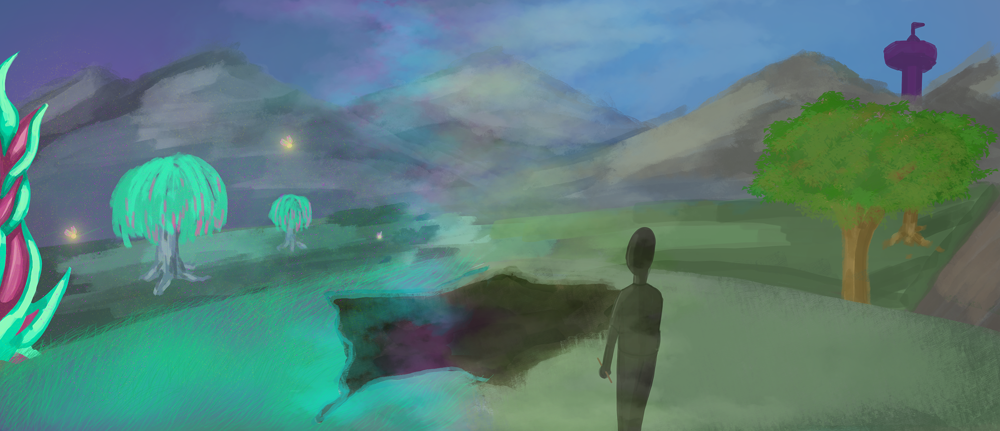

Hollow
In the beginning of Mark J.P. Wolf's Building Imaginary Worlds: The Theory
and History of Subcreation , Wolf insinuates that children are the best world builders,
and childhood instances of world building or
worldplaycould point to signs of creative genius. This idea brought me back to all the imaginary worlds I played in as a kid. Hollow was one of those worlds. Hollow is my University of Southern California Media Arts+Pratice degree's final thesis project.
When I was a girl, there was a tree named Hollow . But this wasn't any ordinary tree.
It was a portal into another world, the world of Hollow.

Hollow was a peacefull land of fairies and magic, where magical
creatures roamed about and lived in prosperity with the wizards and sorceresses

The tree was home to all who lived there. It's that magical
epicenter of the land, supplying the land and all its dwellers with magical powers.
(Hover around and click for more)

But a darkness brewed beyond the Great Plains. Dark Hollow ,
a society of the forbidden arts, attacked beginning a war between the two lands.

Eventually, The Grand Council, the overseeing rulers of all the land,
found out about this horrid misuse of magic, and decided to ban magic as punishment.
They uprooted the Hollow tree, our portal into the world, and cut off our access
to all the magic and creatures within it.